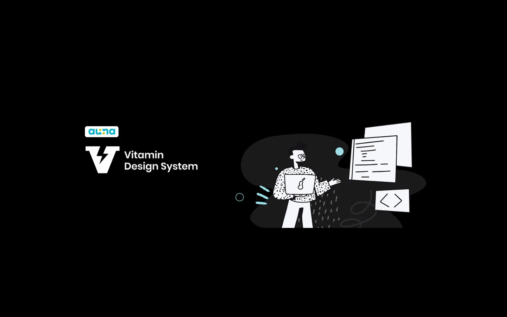
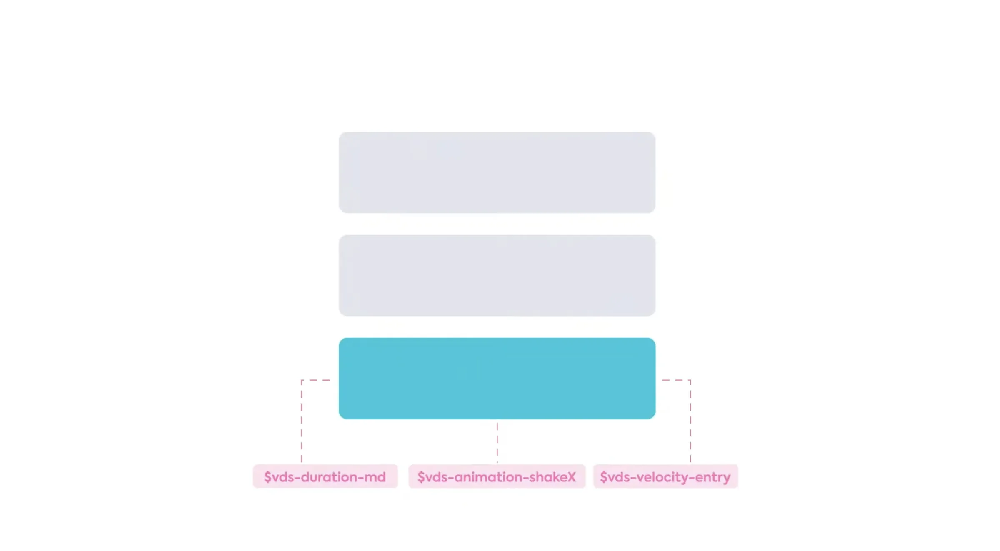
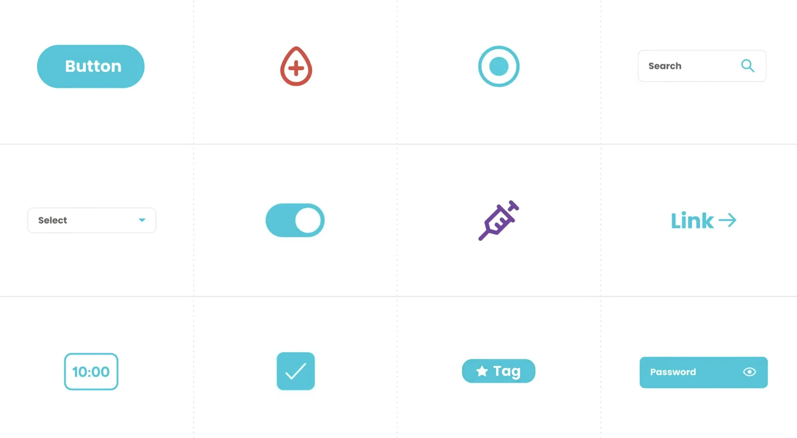

Vitamin Design System for Auna
Motion foundations, components and icons for Auna's healthcare design system, with accessibility as a hard requirement from day one.
- Role
- UX Motion, UI, Design System
- Period
- 2021 to 2022
- Location
- Perú, Colombia and México
- Stack
- Figma, Lottie, design tokens
- Team
- DS team, engineering, accessibility lead

The project
Auna is one of Latin America's leading healthcare providers. As the Vitamin design system was being built, motion, components and iconography needed a coherent foundation. Healthcare UIs reach patients in vulnerable moments, and motion that feels fun in a consumer app can disorient someone in a medical context.
The brief was to define foundations the whole product could rely on, with accessibility built in from the start.
Motion tokens
I defined a set of motion tokens: duration scales, easing curves and meaning categories (entry, exit, state change, attention). Each token documents when to use it and when not to, and a prefers-reduced-motion baseline turns the whole system into instant transitions for users who need it.

Motion tokens: duration and easingComponents
The component library applies those tokens to buttons, inputs, cards, dialogs and navigation. Each component has defined states and motion behavior, built in Figma and handed off as design tokens engineering can use directly.
 Component library
Component library
Icons
The icon set shares one stroke, grid and optical sizing, so icons stay legible across healthcare screens and pixel densities.

Icon setResult
The foundations shipped as part of Vitamin and are referenced across Auna's product surface in Perú, Colombia and México. The accessibility baseline has been most useful in patient-facing flows, where motion sensitivity is more common.